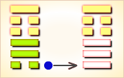
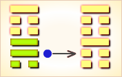
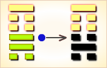
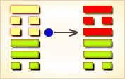

周易第18卦_蛊卦(山风蛊)_艮上巽下
如有疑问互相交流，微信：470283584
周易第18卦详解
蛊卦原文
蛊。元亨，利涉大川。先甲三日，后甲三日。
象曰：山下有风，蛊。君子以振民育德。
白话文解释
蛊卦：大吉大利。利于涉水渡河，但须在甲前三日之辛日与甲后三日之丁日启程。
《象辞》说：本卦上卦为艮为山，下卦为巽为风，贤人如山居于上，宣布德教施于下，所谓山下有风，这是巽卦盼卦象。君子观此卦象，取法于吹拂万物的风，从而振救万民，施行德教。
《断易天机》解
蛊卦艮上巽下，为巽宫归魂卦。蛊是指皿中食物因腐败而生虫，筮遇此卦，半凶半吉。
北宋易学家邵雍解
三蛊在器，事物败坏；辛勤丁宁，转危为安。
得此卦者，艰难迷惑之时，事事不如意；宜大胆革新，奋发图强，艰苦努力，可转危为安。
台湾国学大儒傅佩荣解
时运：力图振作，可改旧观。
财运：不宜堆积，应即贩卖。
家宅：整顿家风；恐有私情；生育不顺。
身体：蛊毒之症，小心咒诅。
传统解卦
这个卦是异卦（下巽上艮）相叠，与随卦互为综卦。蛊本意为事，引申为多事、混乱。器皿久不用而生虫称“蛊”，喻天下久安而因循、腐败，必须革新创造，治理整顿，挽救危机，重振事业。
大象：风入山下，闭而不出，即物腐生虫，意气不通，因循败事。
运势：诸事不如意，艰难迷惑，宜大胆革新，否则引来内忧外患。
事业：运气处于不佳状态，或因外界条件，或因个人因素所致。唯有谨慎分析原因，找出弊端，坚决而大胆，不惜冒险，战胜阻力。这时一要头脑冷静，二要向高明的人请教，必能创造业绩。
经商：诸多不利困扰着自己，不宜继续走老路。应全面分析市场动向，当机立断，另外找寻出路。
求名：会遇到许多困难和不利，应看作是对自己的考验，要以百倍的勇气，继续奋斗。同时，虚心寻找自己的不足，加以补救。
婚恋：不顺利。双方如情投意合，则应全力以赴促成此事，夫妇应共同努力维系家庭。
决策：生不逢时，家道或事业有中落现象，个人陷入多事之秋。唯有正视现实，勤奋勉励，不屈不挠，有所作为，甚至不惜冒险，挽救败落状况。必要时还需耐心等待时机。
台湾张铭仁解卦
蛊：表示受到蛊惑、毒害。主大凶象。蛊毒是因内在腐朽而生虫化毒，显示问题的根因存在已久，却未诚实面对处理而导致愈来愈严重。易做出错误的决策，慨大都被人所迷惑、而一时心神错乱引致祸事。
解释：中蛊毒，无可救药。
特性：内心犹豫，猜疑心重，多事之秋，宜大胆革新。
运势：诸事不如意、积弊已深，未能进展，气运杂乱。逢此宜鼓起勇气，大胆加以革新，有内忧外患之象。
家运：家庭易生烦心之事，不彻底改革有破家、损财之象。
疾病：宜把握治疗时机，冬季占得险象，为内脏恶性疾病。
胎孕：胎有惊。
子女：双亲不堪其忧之苦象也。
周转：信用不好，周转无望。
买卖：交易不成，另谋生计为要。
等人：中途有变，不会来。
寻人：因家庭感情失和而出走，或与人私奔，于东南或东北。
失物：找不回来，遗失似是木制工艺品，在门口或旅馆遗失，或者是寄失了。
外出：宜推迟或提前。否则会出现危险，务必小心谨慎。
考试：落榜。
诉讼：慎防桃色纠纷，会拖一段时间，不易解决。
求事：不利。
改行：弃旧迎新，或革新内部人事。
开业：开业者不宜，有损财或官符之灾。
周易第18卦初六爻详解
初六爻辞
初六。干父之蛊，有子，考无咎。厉，终吉。
象曰：干父之蛊，意承考也。
白话文解释
初六：继承父业，有一个孝顺的儿子，固然没有灾害，即使遇到危险，最后乃吉利。
《象辞》说：继承父业，意思是继承其父遗志。
北宋易学家邵雍解
吉：得此爻者，会得到祖先的庇佑，营谋遂意。做官的会受到重任，改革创新。
台湾国学大儒傅佩荣解
时运：克勤克俭，前途光明。
财运：重整旧业，可以得利。
家宅：改造旧宅；婚嫁可喜。
身体：初无大碍，无子不利。
初六变卦

初六爻动变得周易第26卦：山天大畜。这个卦是异卦（下乾上艮）相叠。乾为天，刚健；艮为山，笃实。畜者积聚，大畜意为大积蓄。为此不畏严重的艰难险阻，努力修身养性以丰富德业。
周易第18卦九二爻详解
九二爻辞
九二。干母之蛊，不可贞。
象曰：干母之蛊，得中道也。
白话文解释
九二：继承母业，则吉凶不可卜问。
《象辞》说：继承母业，九二处下卦中位，爻象显示其人得中正之道。
北宋易学家邵雍解
平：得此爻者，改旧从新，则会如意。女命勤俭持家，性忠直者多福。
台湾国学大儒傅佩荣解
时运：顺势而行，不可草率。
财运：旧债积弊，缓和处理。
家宅：母系擅权，忍耐协调；可得佳妇。
身体：大人寒症，小孩补气。
九二变卦

九二爻动变得周易第52卦：艮为山。这个卦是同卦（下艮上艮）相叠。艮为山，二山相重，喻静止。它和震卦相反。高潮过后，必然出现低潮，进入事物的相对静止阶段。静止如山，宜止则止，宜行则行。行止即动和静，都不可失机，应恰到好处，动静得宜，适可而止。
周易第18卦九三爻详解
九三爻辞
九三。干父之蛊，小有悔，无大咎。
象曰：干父之蛊，终无咎也。
白话文解释
九三：继承父业，即使稍有过错，也不会出大问题。
《象辞》说：继承父业，最终不会遭逢灾难。
北宋易学家邵雍解
凶：得此爻者，躁进者有失，不听信谗言者则无难。
台湾国学大儒傅佩荣解
时运：痛改前非，仍有未来。
财运：重立旧业，小损大利。
家宅：改造住宅。
身体：应可痊愈。
九三变卦

九三爻动变得周易第4卦：山水蒙。这个卦是异卦（下坎上艮）相叠，艮是山的形象，喻止；坎是水的形象，喻险。卦形为山下有险，仍不停止前进，是为蒙昧，故称蒙卦。但因把握时机，行动切合时宜，因此，具有启蒙和通达的卦象。
周易第18卦六四爻详解
六四爻辞
六四。裕父之蛊，往见吝。
象曰：裕父之蛊，往未得也。
白话文解释
六四：光大父业，施行起来困难重重。
《象辞》说：光大父业(困难重重)，施行之中未尽得当。
北宋易学家邵雍解
凶：得此爻者，事事见忧，有足疾。
台湾国学大儒傅佩荣解
时运：不可因循，否则自误。
财运：未能除弊，难以获利。
家宅：父业难保。
身体：急救内患，以免不治。
六四变卦

六四爻动变得周易第50卦：火风鼎。这个卦是异卦（下巽上离）相叠。燃木煮食，化生为熟，除旧布新的意思。鼎为重宝大器，三足稳重之象。煮食，喻食物充足，不再有困难和困扰。在此基础上宜变革，发展事业。
周易第18卦六五爻详解
六五爻辞
六五。干父之蛊，用誉。
象曰：干父之蛊，承以德也。
白话文解释
六五：继承父业，博得了赞誉。
《象辞》说：继承父业而博得了赞誉，因为继承了其父的美好品德。
北宋易学家邵雍解
吉：得此爻者，多喜庆之事，家中或进人口。做官的进取有望，名誉远播。
台湾国学大儒傅佩荣解
时运：自行振作，仍可扬名。
财运：改善旧业，仍然有利。
家宅：努力兴家；嫁娶高亲。
身体：应觅名医。
六五变卦

六五爻动变得周易第57卦：巽为风。这个卦是同卦（下巽上巽）相叠，巽为风，两风相重，长风不绝，无孔不入，巽亦为顺、谦逊的态度和行为，可无往不利。
周易第18卦上九爻详解
上九爻辞
上九。不事王侯，高尚其事。
象曰：不事王侯，志可则也。
白话文解释
上九：不服务于王侯，因为其人看重自身价值。
《象辞》说：不服务于王侯，这种志趣可以效法。
北宋易学家邵雍解
平：得此爻者，宜守旧，好运者，多遇尊贵，能获得提拔。做官的宜退守，或告休。
台湾国学大儒傅佩荣解
时运：以退为进，较为有利。
财运：不必急售，获利可期。
家宅：住在高处；良缘天成。
身体：大限将至，安其天年。
上九变卦
上九爻动变得周易第46卦：地风升。这个卦是异卦（下巽上坤）相叠。坤为地、为顺；巽为木、为逊。大地生长树木，逐渐成长，日渐高大成材，喻事业步步高升，前程远大，故名“升”。